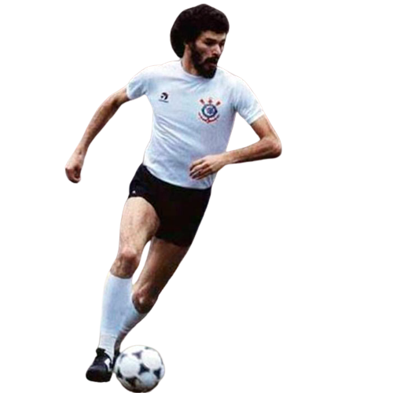

-
Cássio
#12
Descrição
Nome completo: Cássio Ramos
Posição: goleiro
Data de nascimento: 06 de junho de 1987
Jogos pelo Corinthians: 603
Gols marcados: 0
Conquistas pelo Corinthians:
Paulista 2019, 2018, 2017 e 2013; Mundial de Clubes 2012; Libertadores 2012; Brasileirão 2011, 2015 e 2017; Recopa Sul-Americana 2013; -
Fagner
#23
Descrição
Nome completo: Fagner Conserva Lemos
Posição: lateral-direito
Data de nascimento: 11 de junho de 1989
Jogos pelo Corinthians: 459
Gols marcados:13
Conquistas pelo Corinthians:
Paulista 2019,2018 e 2017; Brasileirão 2015 e 2017; -
Chicão
#03

Descrição
Nome completo:Anderson Sebastião Cardoso
Posição:Zagueiro
Data de nascimento: 03 de junho de 1981
Jogos pelo Corinthians: 247
Gols marcados:42
Conquistas pelo Corinthians:
Mundial de Clubes 2012; Libertadores 2012; Brasileirão 2011; Recopa Sul-Americana 2013; Copa do Brasil 2009; Paulistão 2009 e 2013; e Brasileirão Série B 2008 -
Gamarra
#04
Descrição
Nome completo:Carlos Alberto Gamarra Pavón
Posição:Zagueiro
Data de nascimento: 17 de fevereiro de 1971
Jogos pelo Corinthians:80
Gols marcados:7
Conquistas pelo Corinthians:
Campeonato Brasileiro 1998, Campeonato Paulista 1999 -
Wladimir
#04
Descrição
Nome completo:Wladimir Rodrigues dos Santos
Posição:lateral-esquerdo
Data de nascimento: 29 de agosto de 1954
Jogos pelo Corinthians:805
Gols marcados:32
Conquistas pelo Corinthians:
Campeonato Paulista 1977, 1979, 1982, 1983 -
Marcelinho Carioca
#07
Descrição
Nome completo:Marcelo Pereira Surcin
Posição:Meia-Atacante
Data de nascimento: 31 de dezembro de 1971
Jogos pelo Corinthians:433
Gols marcados:206
Conquistas pelo Corinthians:
Campeonato Paulista 1995, 1997, 1999 e 2001. Copa do Brasil de 1995. Campeonato Brasileiro 1998 e 1999. Campeonato Mundial 2000 -
Neto
#10
Descrição
Nome completo:José Ferreira Neto
Posição:Meia-Atacante
Data de nascimento: 09 de setembro de 1966
Jogos pelo Corinthians:228
Gols marcados:80
Conquistas pelo Corinthians:
Campeonato Brasileiro de 1990 e Campeonato Paulista de 1997 -
Rivellino
#10
Descrição
Nome completo:Roberto Rivelino
Posição:Meia-Atacante
Data de nascimento: 01 de janeiro de 1946
Jogos pelo Corinthians:474
Gols marcados:144
Conquistas pelo Corinthians:
Rio-São Paulo 1966 -
Sócrates
#08
Descrição
Nome completo:Sócrates Brasileiro Sampaio de Souza Vieira de Oliveira
Posição:Zagueiro
Data de nascimento: 19 de fevereiro de 1954
Jogos pelo Corinthians:298
Gols marcados:172
Conquistas pelo Corinthians:
Campeonato Paulista 1979, 1982, 1983 -
Ronaldo Fenômeno
#09

Descrição
Nome completo:Ronaldo Luís Nazário de Lima
Posição:Atacante
Data de nascimento: 22 de setembro de 1976
Jogos pelo Corinthians:69
Gols marcados:35
Conquistas pelo Corinthians:
Campeonato Paulista 2009 e Copa do Brasil 2009 -
Emerson Sheik
#11
Descrição
Nome completo:Marcio Passos de Albuquerque
Posição:Atacante
Data de nascimento: 06 de setembro de 1978
Jogos pelo Corinthians:177
Gols marcados:28
Conquistas pelo Corinthians:
Campeonato Brasileiro 2011, Copa Libertadores da América 2012, Mundial de Clubes 2012, Campeonato Paulista 2013 e Recopa Sul-Americana 2013.